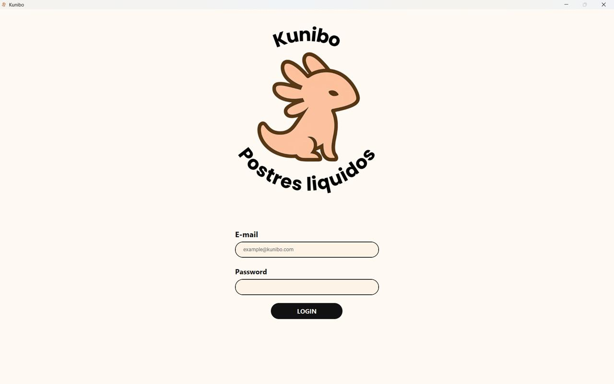
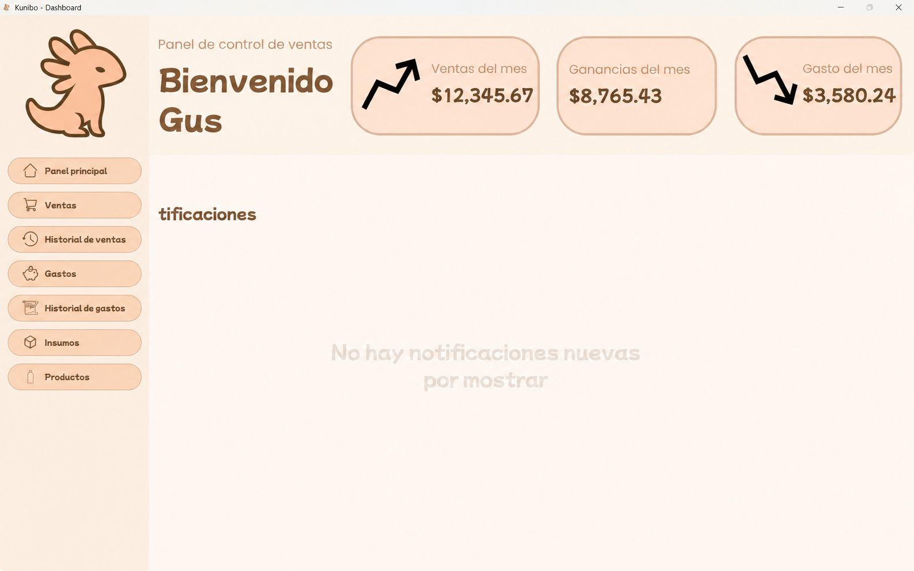
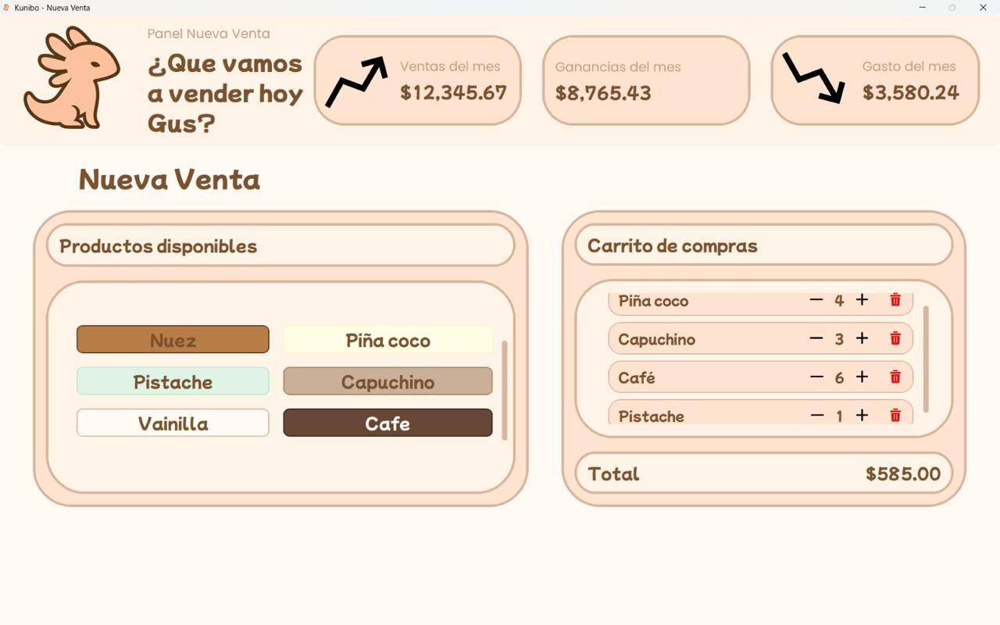
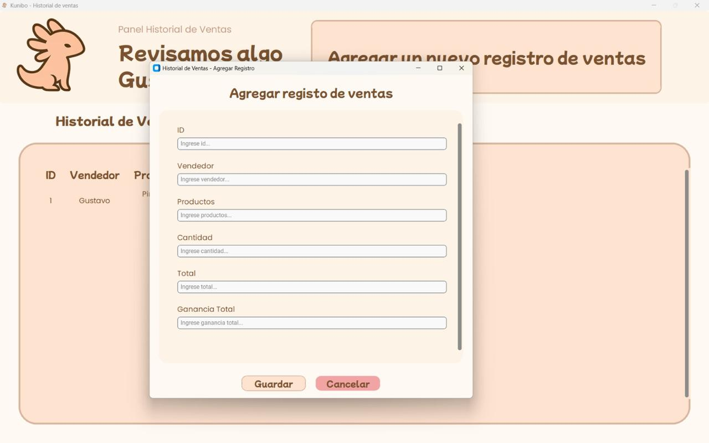

Sobre mí
Frontend developer apasionado por el diseño visual, la experiencia de usuario y el branding digital. Disfruto crear interfaces que no solo funcionen bien, sino que también transmitan identidad y emoción.
Tecnologías
Filosofía / Enfoque
Me interesa construir interfaces que no solo funcionen bien, sino que también transmitan identidad, claridad y experiencia visual. Disfruto combinar frontend, branding y diseño digital para crear productos con personalidad propia y una experiencia más humana.
Proyectos
Portafolio Digital
Experiencia digital diseñada para networking mediante tarjetas NFC, enfocada en branding personal y diseño minimalista.
Kunibo Dashboard
Dashboard administrativo enfocado en ventas, gastos y control visual de negocio, desarrollado con Python y CustomTkinter bajo una identidad visual personalizada.



